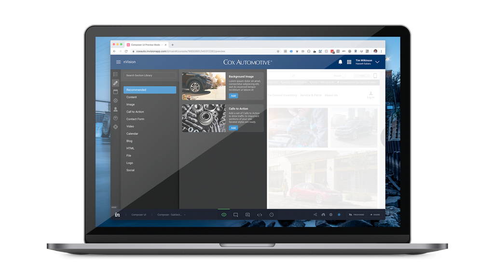
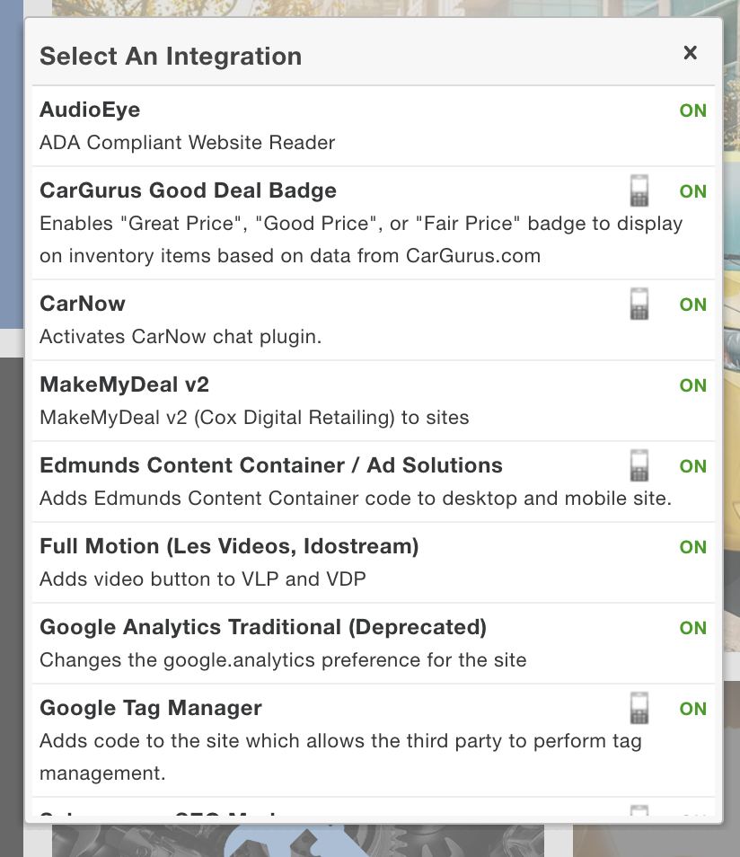
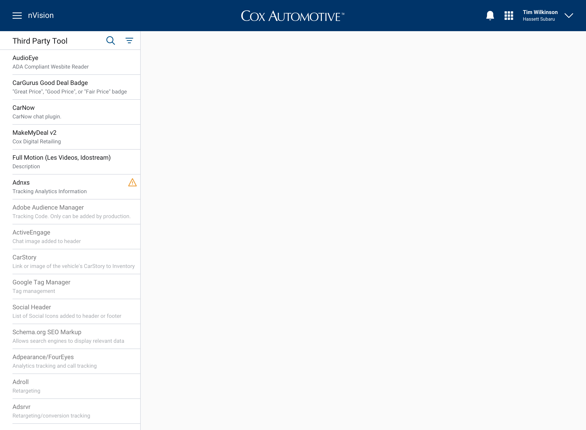
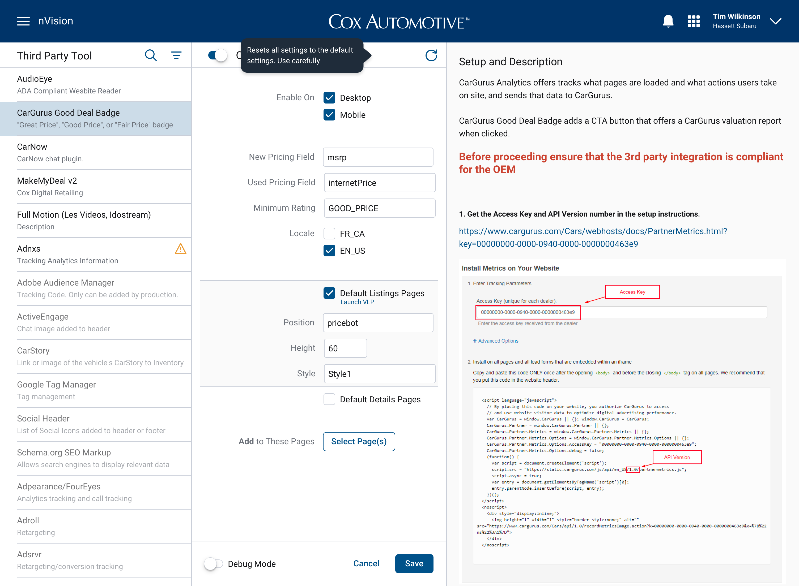

Composer Architecture
I served as the lead designer on a cross-functional product squad alongside product managers, engineers, and analysts. Our mission was to stay one to two quarters ahead of development by proactively shaping the product backlog—evaluating epics, analyzing existing implementations, conducting user research, and delivering mockups that would guide future development.
Background: What Is Composer?
Composer is a core internal tool that enables car dealerships—and internal staff—to manage their websites. Tasks range from basic content updates to configuring complex site preferences. However, the tool had received minimal investment over the years, resulting in a clunky, unintuitive experience heavily reliant on hover states and overlay dialogs. It was ripe for modernization.
Strategic Framing
My initial challenge was to reimagine the future of Composer—not just visually, but behaviorally. Leveraging an existing design system helped eliminate decisions around color, spacing, and iconography, allowing me to focus on UX architecture and product usability. I created a foundational set of UX principles to guide the project and align the team:
- Provide guidance throughout
- Make good decisions easy
- Aid users with tooling
- Prioritize common decisions
- Be accessible to all users
- Intuitive for basic users, configurable for advanced
- Ensure mobile parity
- Keep users informed
- Design for time-efficiency
- Support tracking and tagging
These principles informed every design decision and helped us advocate for user-centered improvements across the tool.
User Research
To deeply understand the current pain points, I led an intensive two-day round of user interviews and observations. This included:
- Group interviews with four internal departments
- Task-specific roundtable discussions
- 1:1 shadow sessions to observe real-time behaviors and friction
These sessions uncovered dozens of opportunities for streamlining workflows. For example, simple preference toggles were implemented with dropdowns—even for binary true/false values. Replacing these with checkboxes reduced the number of clicks and improved scannability.

Design Execution
Third-Party Tool
The first high-priority feature we tackled was the Third-Party Integration Manager, used to configure external tools and services supported by the platform.
Before:
A static dialog with a long, unorganized list of integrations. Users had to click into each item to access preferences, with documentation stored in a separate system.
After:
I redesigned this as a stand-alone, full-page application with:
- A searchable, categorized list of integrations on the left
- Activated integrations visually elevated to the top
- A contextual panel to the right for editing preferences
- Embedded documentation available inline
This architecture preserves context, supports fast scanning and filtering, and dramatically reduces cognitive overhead. The design has already moved into implementation and is receiving positive early feedback.

Impact
The Composer overhaul demonstrates the value of aligning research, design, and architecture at the foundation level. My contributions created:
- A scalable UX framework for future work
- A human-centered foundation for high-complexity tools
- A tangible improvement in one of the system’s most used (and previously painful) features

